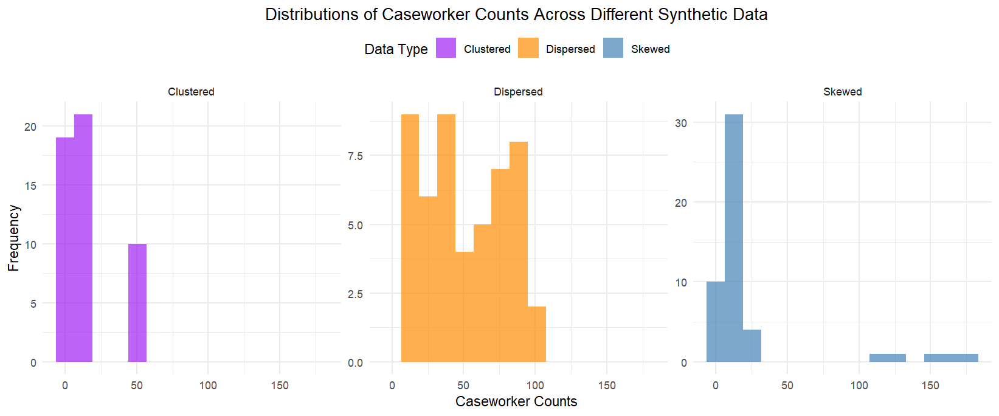

# Baseline: Random Assignment
random_assignment <- function(data) {
shuffled_data <- data[sample(nrow(data)), ]
half <- nrow(shuffled_data) %/% 2
treatment <- shuffled_data[1:half, ]
control <- shuffled_data[(half + 1):nrow(shuffled_data), ]
return(list(Treatment = treatment, Control = control))
}
# Alternate Assignment
alternate_assignment <- function(data) {
sorted_data <- data[order(-data$Case_Workers), ]
treatment <- sorted_data[seq(1, nrow(sorted_data), 2), ]
control <- sorted_data[seq(2, nrow(sorted_data), 2), ]
return(list(Treatment = treatment, Control = control))
}
# Greedy Algorithm
greedy_assignment <- function(data) {
sorted_data <- data[order(-data$Case_Workers), ]
treatment <- data.frame()
control <- data.frame()
treatment_sum <- 0
control_sum <- 0
for (i in 1:nrow(sorted_data)) {
if (treatment_sum <= control_sum) {
treatment <- rbind(treatment, sorted_data[i, ])
treatment_sum <- treatment_sum + sorted_data$Case_Workers[i]
} else {
control <- rbind(control, sorted_data[i, ])
control_sum <- control_sum + sorted_data$Case_Workers[i]
}
}
return(list(Treatment = treatment, Control = control))
}
# Largest Differencing Method with Backtracking
largest_differencing_partition <- function(data) {
S <- sort(data$Case_Workers, decreasing = TRUE)
steps <- list()
while (length(S) > 1) {
largest <- S[1]
second_largest <- S[2]
steps <- c(steps, list(c(largest, second_largest)))
S <- c(S[-c(1, 2)], abs(largest - second_largest))
S <- sort(S, decreasing = TRUE)
}
subset1 <- c()
subset2 <- c()
for (step in rev(steps)) {
if (sum(subset1) <= sum(subset2)) {
subset1 <- c(subset1, step[1])
subset2 <- c(subset2, step[2])
} else {
subset1 <- c(subset1, step[2])
subset2 <- c(subset2, step[1])
}
}
treatment_df <- data[data$Case_Workers %in% subset1, ]
control_df <- data[data$Case_Workers %in% subset2, ]
return(list(Treatment = treatment_df, Control = control_df))
}Experimental designs sometimes require randomization at the cluster level, where groups of individuals—rather than individuals themselves—are assigned to treatment or control. This approach is often necessary when the intervention naturally applies at the cluster level (e.g., policy changes targeting schools, hospitals, or workplaces) or when participants within a cluster lack independence (e.g., students within the same classroom or employees within the same company).
We encountered this exact challenge in designing a randomized controlled trial (RCT) with caseworkers. Earlier pilot studies revealed that caseworkers within the same agency often communicate during experiments, making it difficult to ensure compliance with their assigned treatment. To address this, we shifted from individual-level to agency-level randomization.
However, this introduced a new challenge: the wide variation in agency caseworker counts makes random assignment prone to substantial imbalances. Since statistical power is typically maximized when treatment and control arms have similar sizes, the key question becomes: how can we allocate agencies to treatment and control groups to achieve balanced caseworker counts?
This question boils down to a classic two-way partition problem: dividing a list of numbers (in this case, agency caseworker counts) into two groups such that the sums of the groups are as close as possible. This problem arises in many contexts, such as splitting workloads across teams or, in our case, creating balanced treatment and control groups in an RCT.
Solving this problem exactly is difficult because it is NP-hard, meaning that finding an exact solution becomes exponentially harder as the dataset grows. Approximate algorithms provide a practical alternative. These methods use simple heuristics to produce solutions quickly, without evaluating every possible combination. While they don’t guarantee a perfect split, they often achieve results that are “good enough” for most real-world applications. Additionally, approximate solutions can serve as upper bounds to help exact algorithms prune the search space, making the process more efficient.
In this blog post, I’ll share my exploration of approximate algorithms for solving this problem, including methods like alternate assignment, greedy algorithms, and the largest differencing method.
Alternate Assignment
The alternate assignment method is straightforward: agencies are first sorted by their caseworker counts, and then alternately assigned to treatment and control groups. This process ensures that both groups receive a mix of agencies with varying sizes and thus to prevent extreme imbalances.
Let’s consider six agencies with caseworker counts: \[ S = \{50,30,40,10,20,5\} \] The alternate assignment method would perform the following steps:
Caseworker counts will be sorted in descending order: {50, 40, 30, 20, 10, 5}
-
The sorted agencies will be alternately assigned to treatment and control groups
Treatment: {50, 30, 10}
Control: {40, 20, 5}
This method is easy to implement and generally ensures reasonably balanced groups. However, it struggles when the data contains clusters or extreme outliers. For example, with S = {45, 44, 43, 5, 4, 3}, the clustering of similar values (e.g. 45, 44, 43) results in imbalances between the treatment and control groups. Similarly, in datasets with extreme outliers, a few very large values can dominate the totals in one group.
Greedy Algorithm
The greedy algorithm attempts to minimize the difference in caseworker counts between treatment and control groups by iteratively assigning each agency to the group with the smaller current total.
Using the same example: \[ S = \{50,30,40,10,20,5\} \]
Caseworker counts will first be sorted in descending order: {50, 40, 30, 20, 10, 5}
-
Then we assign 50 to treatment
Treatment: {50}, Total: 50
Control: {}, Total: 0
-
We assign 40 to control as it has a smaller total
Treatment: {50}, Total: 50
Control: {40}, Total: 40
-
We assign 30 to control as it has a smaller total
Treatment: {50}, Total: 50
Control: {40, 30}, Total: 70
-
Following similar steps, eventually we have
Treatment: {50, 20, 10}, Total: 80
Control: {40, 30, 5}, Total: 75
Compared to alternate assignment, the greedy algorithm achieves better balance (absolute difference: 5 vs. 25). Its dynamic balancing prevents any group from dominating caseworker totals, effectively minimizing the impact of large agencies in datasets with high variance or outliers.
Largest Differencing Method
The largest differencing method (LDM) offers another option to balance groups by iteratively pairing and reducing discrepancies. It works by repeatedly taking the two largest remaining values, placing them in different groups, and replacing them with their difference.
Below is an example for illustration:
\[ S = \{2,8,11,12,17,18\} \]
-
After sorting caseworker counts in descending order, we pair the two largest numbers and replace them with their difference
18-17=1, {12, 11, 8, 2, 1}
12-11=1, {8, 2, 1, 1}
8-2=6, {6, 1, 1}
6-1=5, {5, 1}
5-1=4, {4}
-
We then reconstruct the treatment and control groups by backtracking through the differencing steps. Specifically, we remove the difference from the subset, with larger number replacing the difference in the same set and the smaller one adding to another set
-
From 5-1=4
Treatment: {5}
Control: {1}
-
From 6-1=5
Treatment: {6}
Control: {1, 1}
-
From 8-2=6
Treatment: {8}
Control: {2, 1, 1}
-
From 12-11=1
Treatment: {11, 8}
Control: {12, 2, 1}
-
From 18-17=1
Treatment: {17, 11, 8}
Control: {18, 12, 2}
-
The LDM approach ensures that the largest contributors to imbalance are addressed first, effectively distributing dominant values across the treatment and control groups.
Method Comparison
To systematically evaluate methods for achieving balance, I conducted a simulation analysis using different synthetic datasets. For each simulation, a random subset of a given number of agencies (clusters) was selected among 50 agencies, and these agencies were assigned to treatment and control groups to minimize the difference in caseworker totals between the groups. This process was repeated 500 times for each subset size.
Specifically, I considered three types of data structures: (1) clustered data, where caseworker counts are concentrated in two distinct clusters of high and low values; (2) dispersed data, where caseworker counts are evenly spread across a wide range; and (3) skewed data, where a few agencies have very large caseworker counts while most have smaller counts. The distributions of these datasets are displayed below.

The graphs below summarize the simulation results. As expected, random assignment without accounting for the variation in caseworker counts among agencies results in highly imbalanced samples, producing the largest mean absolute differences between groups. Among the three data types, the Greedy Algorithm consistently performs the best to create groups where caseworker counts are relatively similar. For dispersed and clustered data, both the Greedy Algorithm and LDM perform comparably well. However, for skewed data, LDM performs much worse than Greedy, suggesting its limitations in handling datasets with extreme outliers.
Some key takeaways from my exploration
Greedy algorithm and LDM are often good enough to achieve balanced groups efficiently, though LDM struggles with skewed data
Approximate vs. exact algorithms presents a trade-off between accuracy and computational efficiency
Simulate for our specific data to identify the best method based on our specific priorities (e.g. accuracy, computational efficiency)
Below is the R code implementation of these treatment assignment approaches. For those who are interested, this script implements the complete greedy algorithm to find the perfect split between treatment and control groups.